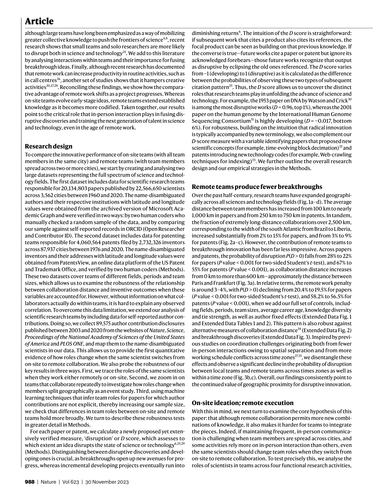

저자: Yiling Lin, Carl Benedikt Frey, Lingfei Wu | 날짜: 2023 | Journal: Nature | DOI: 10.1038/s41586-023-06767-1 | arXiv: N/A
리뷰 모드: PDF
원격 협업은 혁신적 아이디어를 더 적게 만들어낸다. 20세기 후반부터 2020년까지 미국·유럽·중국의 특허·논문·소프트웨어 약 2,000만 건을 분석한 결과, 원격팀은 대면팀보다 Disruption index(CD₅)가 평균 약 0.08 낮았다—즉 기존 지식을 파괴적으로 대체하는 돌파구 연구는 물리적 근접 환경에서 유의미하게 더 많이 나온다. 원격팀은 기존 아이디어를 개발(development)하는 데는 비슷하거나 더 뛰어나지만, 완전히 새로운 방향을 여는 '융합(fusion)' 능력이 약하다는 점이 핵심 발견이다.

Figure 1
| 항목 | 점수 |
|---|---|
| Novelty | 5/5 |
| Technical Soundness | 4/5 |
| Significance | 5/5 |
| Clarity | 4/5 |
| Overall | 5/5 |
총평: 2,000만 건의 특허·논문·소프트웨어를 분석하여 원격 협업이 혁신적 아이디어 생산을 구조적으로 억제함을 실증한 과학의 과학 분야 핵심 연구로, 원격근무 시대에 혁신 정책 설계에 즉각적 함의를 제공한다.